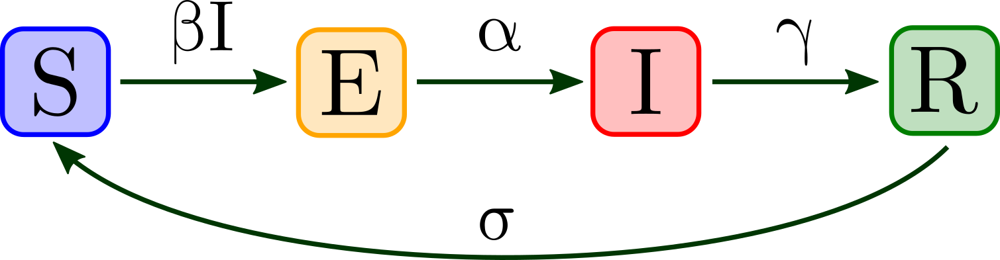

The plot below shows the number of
Susceptible
,
Exposed
,
Infectious
, and
Recovered
individuals over time (in days) as percentages of the entire population. This enhanced model includes death rates, vaccination effects, and immunity waning.
Equations
Parameters
X Axis:
days
Y Axis:
%
Initial Susceptibility, S
0
:
Basic Reproduction Number, R
0
:
Infectious Period, 1/γ:
Latent Period, 1/σ:
Immunity Duration, 1/ω:
Life Expectancy, 1/μ:
Death Onset, 1/α:
Vaccination Rate, p: